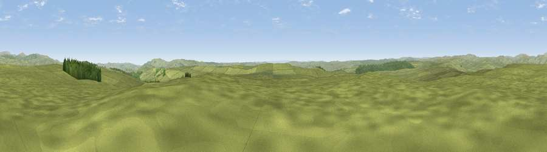

Viewpoint c12024_7789
#9273 in England · top 29% of its area beats it · —Where it is
The exact computed spot (NT 89475 01225). Click the marker for map links.
The view, rendered

A 360° render of this exact spot computed from the terrain model, tree cover and land cover — summer colours, afternoon light, calibrated against photographs of famous viewpoints. Real trees, hedges and buildings will differ in detail.
The panorama
Grey silhouette: terrain skyline in each direction (720 bearings, Earth curvature and refraction included). Dashed green: skyline with trees (+15 m) and buildings (+8 m) as obstacles. Blue strip: how far the ground is visible on each bearing.
Where the view opens
Wedge length = distance to the farthest visible ground on that bearing (vegetation-aware). Rings at 10, 25 and 50 km.
What fills the view
92% grassland · 8% woodland
Angular shares of the visible panorama (visual magnitude), not map area. Landscape diversity 0.14 (0–1 Shannon).
Key numbers
More beautiful places nearby
The staircase of upgrades: each row has a higher view potential than everything closer. Driving times are estimates from straight-line distance, calibrated against real road routing — check an actual route before setting out.
| Place | Direction | Drive | Score |
|---|---|---|---|
| Viewpoint c12037_7784 | NNW · 1 km | ~2 min | 67.1 |
| Cold Law | ENE · 3 km | ~8 min | 76.1 |
| Viewpoint near Netherton | NE · 10 km | ~19 min | 76.5 |
| Darden Rigg | ESE · 10 km | ~20 min | 77.0 |
| Thirl Moor | NW · 11 km | ~21 min | 77.2 |
| Wether Cairn [Wholhope Hill] | NNE · 11 km | ~21 min | 80.7 |
| Viewpoint near Hepple | E · 12 km | ~23 min | 82.4 |
| Viewpoint c12273_7856 | NNE · 13 km | ~24 min | 83.7 |
55.30501, -2.16734 · source: screening · position refined by local search. Computed location — check access rights before visiting.